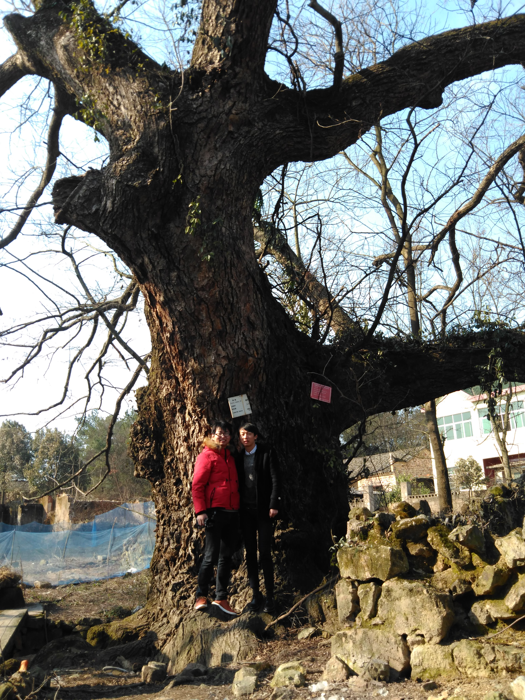
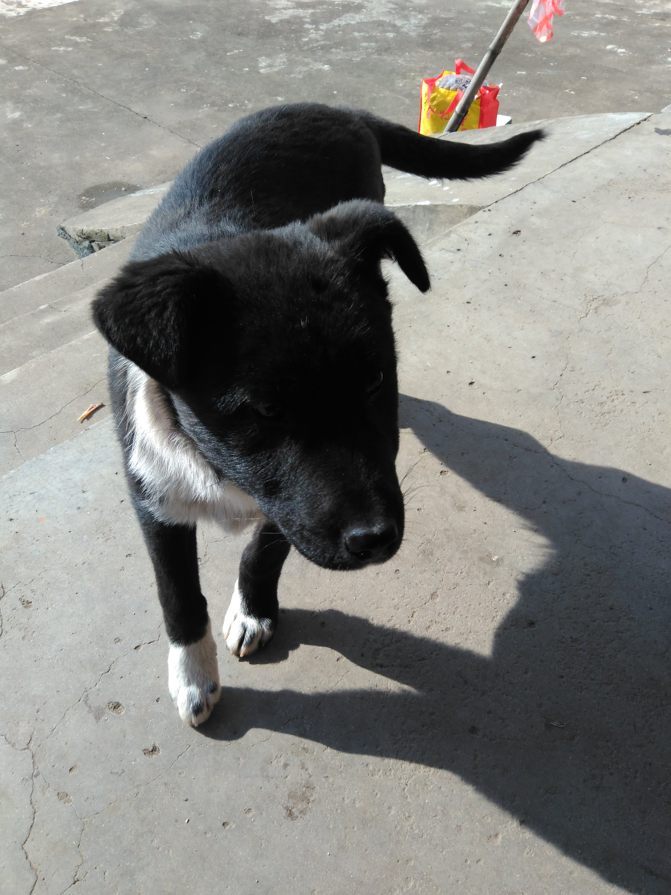
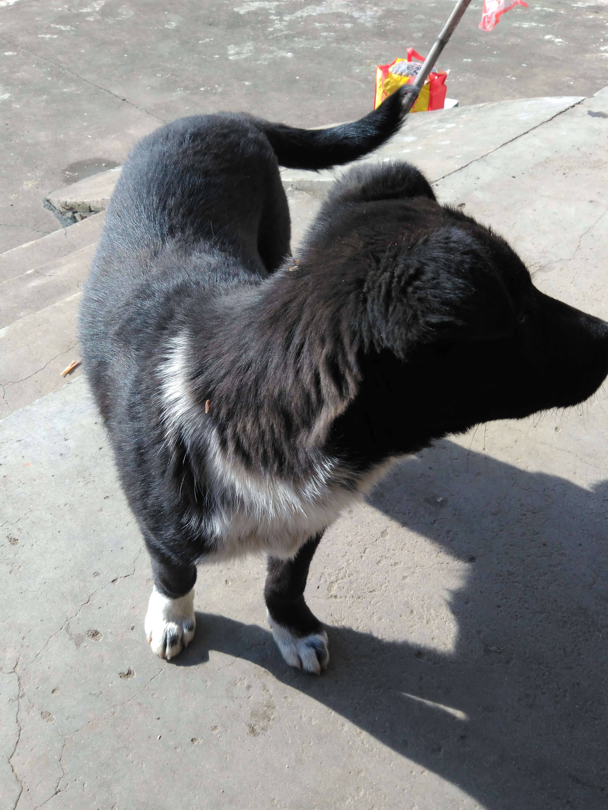
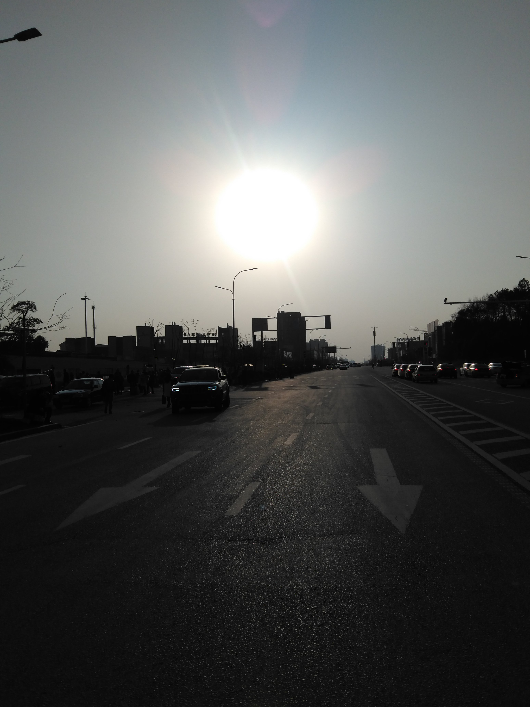

| 名字 | 姜健 |
| 年龄 | 25 |
| 毕业院校 | 上海海洋大学 |
| 现居地 | 中国.上海.杨浦 |
| 籍贯 | 中国.安徽.池州 |
| 联系邮箱 | 1264545970@qq.com 或 jiang.jian199204@gmail.com |
大学时，学习的是计算机科学与技术专业，然而，在学校我并没有好好的学习，而是做了一个伪学霸.毕业后，发现自己作为一个计算机专业的人在能力方面存在很大的欠缺，因此，自己想尝试着通过某种方式来提高自己在职业技能,思来想去，最终，我决定自己去写一个技术博客，前后端都靠自己来实现，而不是用现有的轮子，尽管，重复造轮子是不被提倡的，但是在学习这条路上，有些时候造轮子也是一种学习。重要的是个人在造轮子的过程中能力是否提高了.
关于这个博客，我想把它作为一个教程的方式来写，一方面可以把自己学的东西记录下来，另一方面，如果有些初学者对类似的技术也挺感兴趣，可以作为一个资料来参考，由于个人能力所限，文章并不能保证绝对的正确，如果各位朋友，有发现错误或者描述不准确的地方希望大家可以联系我，以便我及时修改，这样大家可以共同的学习和进步了。
在技术方面，个人大学时代，一直崇拜Linux文化，平常也自己关注Linux相关的内容，大学时代，我们班可能我电脑是第一个装上Linux操作系统的，而且，到目前为止，好像也只有我一个人在玩，好悲哀的感觉....
大学毕业过后，自己从事的是软件开发，主要是Java语言，所以Java方面也是很用心的,学习各种框架，虽然学的不咋地，但是，我是用信心学好的.
最近经常在github上面看到好多项目都是有javascript写的.所以，之前在工作之余，去了解了有关前端方面的技术，咿呀，不看不知道，一看吓一跳.前端技术技术比后端技术更加蓬勃.所以呢? 我就学习去了...,刚好，写这个博客也需要这方面的技术，我就好好练一练吧...
说点废话，我是一个挺恋家的人，在此，贴一些我家乡的照片，以缓解我思乡之苦.



